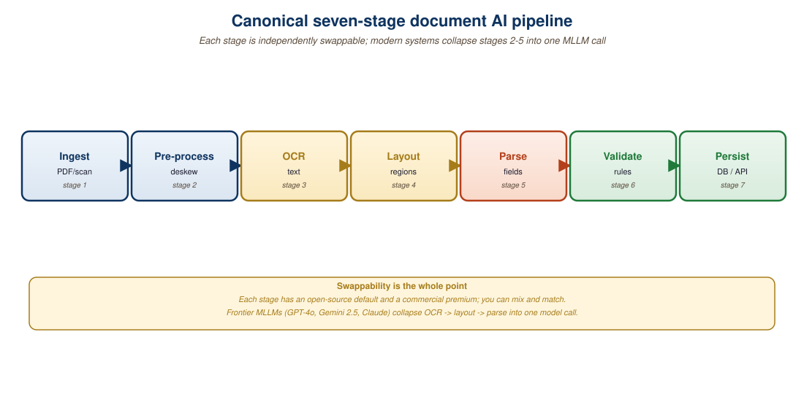

"A seven-stage pipeline at 95% per stage is a 70% pipeline. The art is knowing which two stages to delete before you ship."
An Accuracy-Compounding AI Agent
A production document AI pipeline is rarely a single model call. It is a graph of stages, each with its own accuracy budget, latency budget, and failure modes. This section walks through the canonical seven-stage architecture used by enterprise document processors at scale (ingestion, format normalization, layout detection, OCR, structure parsing, semantic extraction, validation), explains how the stages compose for cost and latency, and presents a reference reconciliation strategy that combines a specialist model with a frontier VLM for confident high-volume processing.
Prerequisites
This section assumes familiarity with modern OCR, layout-aware models, and VLM-based extraction from earlier sections in this chapter. Observability fundamentals covered later in the book deepen the validation-stage discussion here.
21.4.1 The Seven-Stage Canonical Pipeline
A canonical document AI pipeline can have seven stages, each with its own accuracy budget, and the math is unforgiving: at 95% per-stage accuracy, the end-to-end accuracy is only about 70%. Teams that ship reliable document systems almost always sacrifice a feature or two to keep the pipeline short, not long.
Every production document AI pipeline that has shipped at scale at a major enterprise has the same seven logical stages, regardless of the underlying technology. Knowing the canonical decomposition makes both build and buy decisions easier: you can substitute different vendors or models at each stage without redesigning the whole.
The stages, in order, are: (1) ingestion, which accepts documents from email, FTP, scanner APIs, or user uploads and persists them to durable storage; (2) format normalization, which converts heterogeneous inputs (PDF, TIFF, JPEG, HEIC, DOCX, MSG) to a canonical page-image format; (3) layout detection, which identifies regions of each page (text blocks, tables, figures, signatures); (4) OCR, which converts text regions to character sequences with bounding boxes; (5) structure parsing, which reconstructs reading order, table structure, and document hierarchy; (6) semantic extraction, which produces the schema-conformant business data (invoice fields, contract clauses, claim details); and (7) validation, which checks the extracted data against business rules and reconciles against external systems.

21.4.2 Stages 1-2: Ingestion and Normalization
Ingestion looks trivial but accounts for a surprising fraction of production failures. The dominant issues are: encrypted or password-protected PDFs (5-12% of enterprise documents), corrupted file headers that look like PDFs but fail to parse, embedded JavaScript that triggers security alerts, and dropped or duplicated documents in network transfers. A robust ingestion service writes each document to an append-only event log, computes a content hash for deduplication, and emits a single structured event downstream.
Format normalization converts everything to a uniform internal representation. The de facto standard in 2026 is to render every page as PNG at 300 DPI for text-heavy documents (legal, financial) and 200 DPI for image-heavy documents (medical imaging, ID photos). The 300 vs. 200 split balances OCR accuracy against storage cost: 300 DPI roughly doubles storage and inference cost versus 200 DPI but improves OCR character error rate by 0.3-0.8 absolute on small fonts.
Two normalization details matter disproportionately. The first is deskewing: scanned documents often arrive rotated by 0.5-5 degrees, which collapses OCR accuracy on classical pipelines. A simple Hough-transform-based deskew pre-stage costs less than 50 ms per page and can improve downstream F1 by 6-12 points on degraded scans. The second is color-channel normalization: highlighting and stamped overlays carry information that is lost if the page is binarized too aggressively. Modern pipelines retain full color but apply per-channel contrast stretching.
21.4.3 Stage 3: Layout Detection
Layout detection is the first stage where machine learning enters. The job is to draw bounding boxes around the page's structural elements: text blocks, tables, figures, signatures, headers, footers, page numbers. The dominant approaches are Detectron2-style instance segmentation, YOLO-based detectors, and DETR-style transformer object detection. As of 2026, a YOLOv8 detector fine-tuned on DocLayNet (Section 21.1) is the production sweet spot: 0.86 mAP, 35 ms per page on a single T4, and trivial to deploy.
The output is a list of regions with class labels and bounding boxes. Downstream stages consume different region types: text and headers feed OCR, tables feed a specialized table parser, and figures are typically captioned by a VLM for accessibility and search.
Improvements to layout detection have outsized impact downstream because every later stage assumes layout is correct. A 5-point F1 gain in detecting table boundaries can cascade into 12-15 F1 points of accuracy improvement at the final extraction stage, because the table parser only runs on regions the layout stage labels as tables. When a document AI pipeline plateaus, the cheapest single intervention is usually to improve layout detection by adding 1k-2k labeled in-domain examples.
21.4.4 Stages 4-5: OCR and Structure Reconstruction
OCR converts text regions to character sequences. The choice of OCR engine depends on document class (Section 21.1): TrOCR for handwriting and degraded scans, PaddleOCR or Tesseract for clean printed text, Azure Read or Google Cloud Vision for managed API simplicity. A common production pattern is a fallback chain: try the cheap fast engine first, route low-confidence outputs (or specific region types like signatures) to a more expensive engine.
Structure reconstruction handles three concerns. Reading order assembly orders text blocks into the sequence a human would read them; this is non-trivial for multi-column layouts, sidebars, and pull-quotes. Table reconstruction takes pixel coordinates of cell boundaries and produces a logical row/column grid with merged-cell handling. Hierarchy detection identifies sections, subsections, and reference relationships (a footnote marker linking to a footnote, a "see Section 3.2" reference pointing at a target).
The 2026 toolset for structure reconstruction is fragmented. unstructured.io's library and Microsoft's Layout Parser dominate the open-source side; commercial offerings from Azure Document Intelligence, Google Document AI, and AWS Textract bundle structure with OCR. For tables specifically, Microsoft's Table Transformer (TATR) and IBM's TableFormer are the strongest open-source options.
21.4.5 Stage 6: Semantic Extraction
This is where business logic meets ML output. The job is to take the parsed document and produce schema-conformant business data: an invoice JSON, a contract clause list, a medical claim record. The choice of extractor depends on schema complexity and document variability.
For high-volume, low-variability documents with stable schemas (invoices, purchase orders, ACORD insurance forms), a fine-tuned LayoutLMv3 plus rules engine is typically the right answer. For variable-schema documents (contracts with bespoke clauses, regulatory filings, scientific papers), a frontier VLM with structured-output schemas is preferable. For long documents that exceed a single transformer's context window (multi-hundred-page contracts, scientific monographs), Gemini 1.5 Pro's million-token context or retrieval-augmented generation over chunked content are the standard patterns.
21.4.6 Stage 7: Validation and Reconciliation
Validation closes the loop. It catches errors before they enter downstream business systems. Three validation patterns are standard in production. The first is intra-document consistency: subtotal + tax = total, dates fall in plausible ranges, addresses parse to valid postal codes. The second is inter-document reconciliation: this invoice's vendor matches a known supplier in the ERP, this purchase order's line items match the supplier's catalog. The third is statistical anomaly detection: this invoice's total is more than three standard deviations from the historical mean for this vendor.
The validation tier should not just reject anomalous documents; it should route them to a human review queue with a structured explanation of which check failed. A typical 2026 architecture uses a confidence threshold per field: above 95% confidence, the extraction is auto-approved; between 85% and 95%, the document is flagged for spot-check audit; below 85%, it is routed to a full human review. This tiered routing concentrates human attention where it adds the most value.
21.4.7 Cost and Latency Budget
The composite per-page cost and latency depend on the choices at each stage. The following matrix captures the dominant patterns observed at production scale in 2026.
| Stage | Budget Tier | Per-page Cost | Per-page Latency | Typical Tech |
|---|---|---|---|---|
| Ingestion + Normalize | baseline | $0.0001 | 80 ms | Pillow, Ghostscript |
| Layout detection | baseline | $0.0002 | 35 ms | YOLOv8 on DocLayNet |
| OCR (Tesseract) | cheap | $0.00005 | 800 ms | Tesseract 5 on CPU |
| OCR (TrOCR) | medium | $0.0008 | 120 ms | TrOCR-Base on RTX 4090 |
| OCR (Azure Read) | premium | $0.0015 | 300 ms | Azure Document Intelligence |
| Structure parse | baseline | $0.0003 | 45 ms | unstructured.io + TATR |
| Extract (LayoutLMv3) | cheap | $0.0002 | 40 ms | self-host on T4 |
| Extract (Gemini 2.0 Flash) | medium | $0.0002 | 900 ms | API |
| Extract (GPT-4o) | premium | $0.008 | 2400 ms | API |
| Validation | baseline | $0.00005 | 20 ms | rules engine + DB lookups |
21.4.8 The Reconciliation Pattern
The most reliable production pattern in 2026 is reconciliation: run two independent extractors and accept results only when they agree. A specialist model (LayoutLMv3 or Donut) and a frontier VLM (Claude 3.5 or Qwen2.5-VL) make ideal pairs because they fail in different ways: the specialist fails on out-of-distribution layouts but is stable; the VLM is robust to layout variation but unstable across runs.
The pattern works as follows. Run both extractors on every document. For each field, compute a confidence based on whether the two outputs agree (exact match, fuzzy string match within edit distance 2, or numerical match within tolerance). Fields where both agree are auto-accepted at high confidence. Fields where they disagree are routed to a tiebreaker: a third model, a rules check, or a human reviewer. In a benchmark by a top-3 EU bank on invoice extraction, the dual-model reconciliation pattern achieved 99.2% accuracy at 4.1% manual review rate, compared with 96.8% accuracy at 0% manual review using LayoutLMv3 alone or 94.5% accuracy at 0% manual review using GPT-4o alone.
from dataclasses import dataclass
from difflib import SequenceMatcher
@dataclass
class ExtractionResult:
specialist: dict
vlm: dict
def field_agreement(a: str, b: str, tol=0.92) -> bool:
"""Fuzzy string agreement with numeric special-case."""
if a is None or b is None:
return a == b
# Numeric: tolerance-based
try:
return abs(float(a) - float(b)) < 0.01
except ValueError:
pass
# String: similarity ratio
return SequenceMatcher(None, a, b).ratio() >= tol
def reconcile(result: ExtractionResult, required_fields: list[str]):
"""Return (accepted_fields, disputed_fields, route_to_human)."""
accepted, disputed = {}, {}
for key in required_fields:
a, b = result.specialist.get(key), result.vlm.get(key)
if field_agreement(a, b):
accepted[key] = a or b # Prefer non-null
else:
disputed[key] = {"specialist": a, "vlm": b}
route_to_human = len(disputed) > 0
return accepted, disputed, route_to_human
# Example usage
result = ExtractionResult(
specialist={"invoice_number": "INV-2025-08841",
"total": "2391.90", "vendor": "Stahlwerk Maier"},
vlm={"invoice_number": "INV-2025-08841",
"total": "2391.90", "vendor": "Stahlwerk Maier GmbH"},
)
accepted, disputed, to_human = reconcile(
result, ["invoice_number", "total", "vendor"]
)
print(f"Accepted: {accepted}")
print(f"Disputed: {disputed}")
print(f"Route to human: {to_human}")21.4.9 Monitoring and Drift
Document distributions drift. A bank's invoice mix changes when it onboards new suppliers; an insurer's claim distribution shifts when a new product line launches; a hospital's lab-report formats change when an upstream vendor updates their software. A production pipeline that ignores drift will silently degrade.
The minimum viable monitoring captures three signals at each pipeline stage. The first is throughput: pages per second, p50/p95/p99 latency, error rate. The second is confidence distribution: histogram of per-document confidence scores, drift in the share of low-confidence documents. The third is human-review feedback: when a reviewer corrects an extracted field, log both the original prediction and the correction so that the data can drive retraining.
Quarterly model evaluation against a held-out gold set of 500-2000 freshly labeled documents is the standard cadence. When accuracy on the gold set drops by more than 2 absolute F1 points, the pipeline triggers a retraining cycle: the latest reviewer corrections are merged into the training set, the model is fine-tuned, and the new model is shadow-tested before promotion. Mature document AI teams treat the gold set as a versioned dataset with full provenance tracking.
A large logistics firm runs three independent extractors on each bill of lading: TrOCR + LayoutLMv3, Donut fine-tuned in-house, and GPT-4o with a structured schema. When all three agree (87% of cases), the document is auto-approved. When two agree (10%), the dissenter is logged and reviewed monthly to detect drift. When none agree (3%), the document goes to immediate human review. The system has self-discovered six new bill-of-lading variants in the last 18 months simply by tracking which model is the outlier in disagreements; in each case, the variant traced to a specific shipping line adopting a new template.
Objective
Run two contrasting document-AI architectures over the same 20-invoice set and compare them on field-level F1: LayoutLMv3 (text + layout + image, OCR-anchored) versus Donut (OCR-free, pixel-to-sequence). Target fields: invoice number, invoice date, vendor name, total amount, line-item count. The point is to internalize how the OCR-anchored and OCR-free families perform on the same task and where each one fails.
Setup
You need a CUDA-capable GPU (8 GB is enough; this lab fits a laptop GPU), and the CORD invoice dataset (Park et al., 2019, huggingface.co/datasets/naver-clova-ix/cord-v2). LayoutLMv3 (microsoft/layoutlmv3-base) and Donut (naver-clova-ix/donut-base-finetuned-cord-v2) are both on Hugging Face.
pip install transformers torch torchvision datasets sentencepiece pytesseract pillow seqevalSteps
- Sample 20 invoices from CORD-v2's validation split with a fixed seed. Each invoice ships with a gold JSON of the canonical fields.
- Run Donut end-to-end. Donut takes the raw image and returns a structured JSON; no OCR step required. Capture latency and the JSON output.
- Run LayoutLMv3 with an OCR step. Use Tesseract or PaddleOCR to produce token-level boxes, then run the fine-tuned LayoutLMv3 (the
cordcheckpoint or a quick few-shot tune) to tag each token. Reconstruct the JSON from the tagged tokens. - Score field-level F1 per field and aggregate. Use exact-match for invoice number and date, fuzzy match (Levenshtein under 3) for vendor name, and numeric tolerance (within 0.01) for total amount.
- Inspect the disagreements. Donut tends to hallucinate digits on low-resolution scans; LayoutLMv3's failures concentrate where OCR misreads the date format. Save 10 examples of each failure mode for the writeup.
Expected Output
A CSV of per-invoice predictions plus a summary table of per-field F1 for both models. Published numbers on CORD-v2 report Donut at roughly 0.86 macro-F1 and LayoutLMv3 at roughly 0.89 macro-F1 with strong OCR; the gap narrows on degraded scans because OCR errors compound.
Extension
Run the same 20 invoices through GPT-4o's vision endpoint with a structured-extraction prompt and add a third column to the comparison. The interesting result is usually that GPT-4o matches or beats both specialist models on clean inputs at a token-cost premium and falls behind on degraded scans because no fine-tuning ever happened.
Document understanding is in transition from pipeline OCR plus layout to end-to-end multimodal models that read documents the way humans do. The frontier in 2024-2026 is three-fold. First, unified document foundation models: Nougat (Blecher et al., Nougat: Neural Optical Understanding for Academic Documents, arXiv:2308.13418) and successor systems like GOT-OCR2.0 (Wei et al., General OCR Theory: Towards OCR-2.0 via a Unified End-to-end Model, arXiv:2409.01704) replace the OCR plus layout plus relation pipeline with a single VLM. Open question: how do you reliably extract structured tables, formulas, and forms when the model can hallucinate?
Second, long-document context. ColPali (Faysse et al., ColPali: Efficient Document Retrieval with Vision Language Models, arXiv:2407.01449) shows that late-interaction over image patches can match or exceed traditional pipeline retrieval for visually rich documents, but indexing cost remains high. Third, grounded answer generation with citations: retrieval-augmented document QA still struggles to ground claims to specific page regions in a verifiable way, which is the gating problem for legal and clinical adoption.
- Production document AI pipelines have seven canonical stages: ingestion, normalization, layout detection, OCR, structure parsing, semantic extraction, validation.
- Each stage is independently swappable; the architecture survives model and vendor turnover better than a monolithic pipeline.
- Layout detection has outsized downstream impact because every later stage assumes its output. Improvements here cascade through the whole pipeline.
- Cost and latency budgets vary by 50-100x depending on per-stage choices. A "cheap" pipeline can hit $0.001/page; a "premium" pipeline reaches $0.01/page.
- Two-model reconciliation (specialist + VLM) achieves higher accuracy at acceptable cost by routing disagreement to human review.
- Drift monitoring, quarterly gold-set evaluation, and a feedback loop from reviewer corrections to retraining are non-negotiable for long-lived deployments.
Show Answer
Show Answer
Show Answer
model parameter and re-evaluate the gold set; if the drop disappears under a frozen version, the cause is the upstream model. Hypothesis three: gold-set staleness (gold labels stopped reflecting current ground truth because the legal definition of certain fields changed). Diagnostic: re-label a sample of the gold set with current guidelines and check whether the new labels improve agreement with the model's outputs; if they do, the gold set itself is wrong. Each diagnostic costs a few engineer-hours, so run them in parallel.Chapter 35 zooms out from document-specific models to the broader Vision-Language Model family that powers the VLM tier of document AI and far more. We will examine ViT and patch tokenization, contrastive vision-language pretraining (CLIP, SigLIP), generative VLMs (LLaVA, BLIP-3, Qwen-VL), the frontier VLM API landscape (GPT-4V, Gemini, Claude Vision), and the evaluation benchmarks (MMMU, BLINK, MathVista) that are becoming the new test of multimodal reasoning.